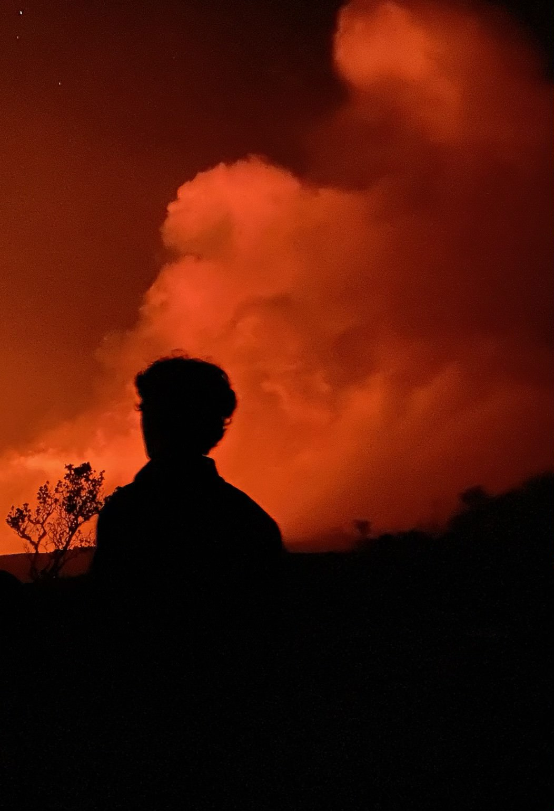

About
As a high school student, I'm fueled by curiosity and a deep love for the great outdoors. Through my camera lens, I've captured the awe-inspiring beauty of nature, from majestic landscapes to hidden gems. But my passions don't stop at photography. I'm also a fierce advocate for the environment and a lover of leadership. Challenges? They're my chance to showcase my unwavering determination and problem-solving skills. With a heart dedicated to environmentalism and justice, I strive to make a positive impact on our planet's well-being.
Amidst the demanding world of academics and extracurriculars, I'm driven to create meaningful change. I'm currently just pursuing high school coursework, but in the future I would like to study Wildlife Ecology, Economics, and Political Science, a combination that ignites my thirst for knowledge and passion for protecting our environment in some shape or form. Take a moment to dive into my photography work. Adventure awaits^
